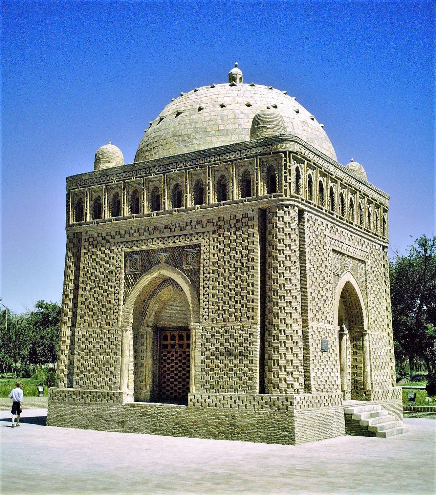
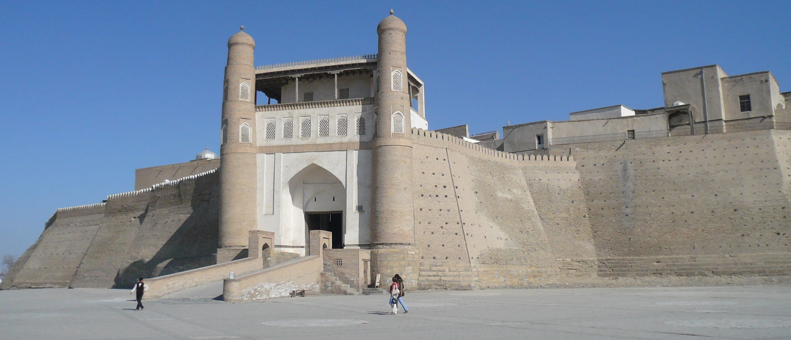
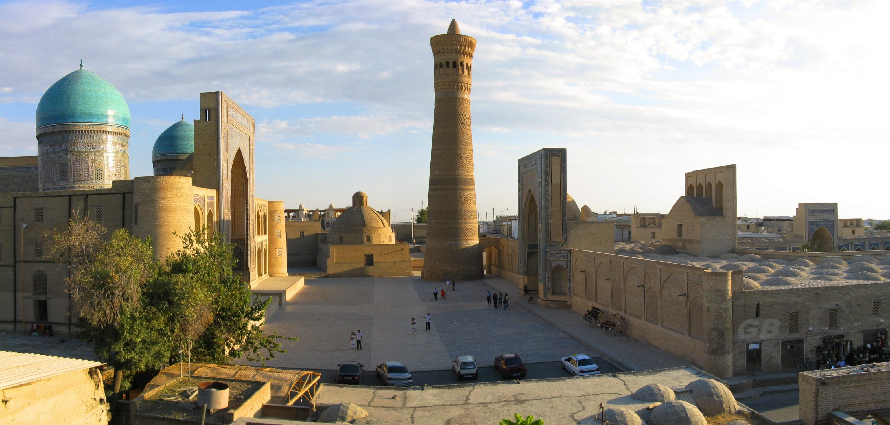
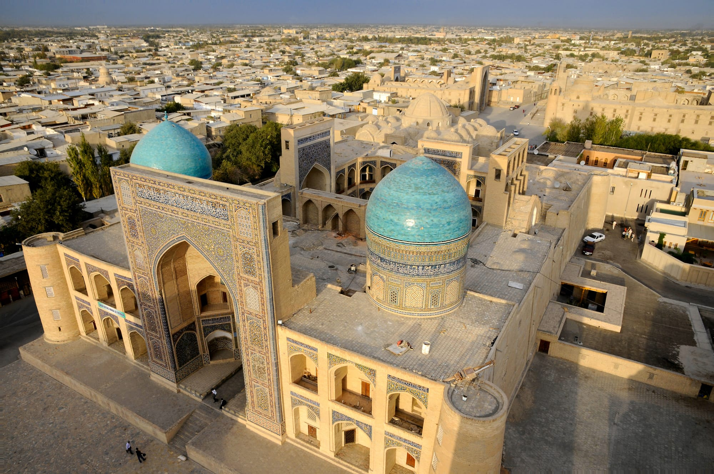
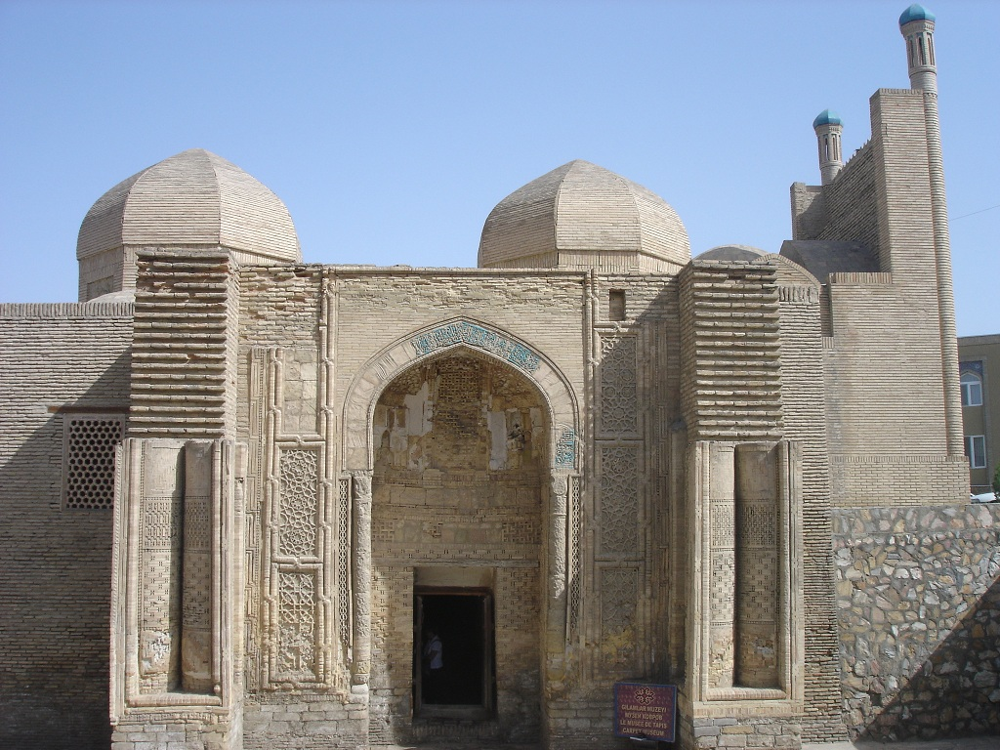
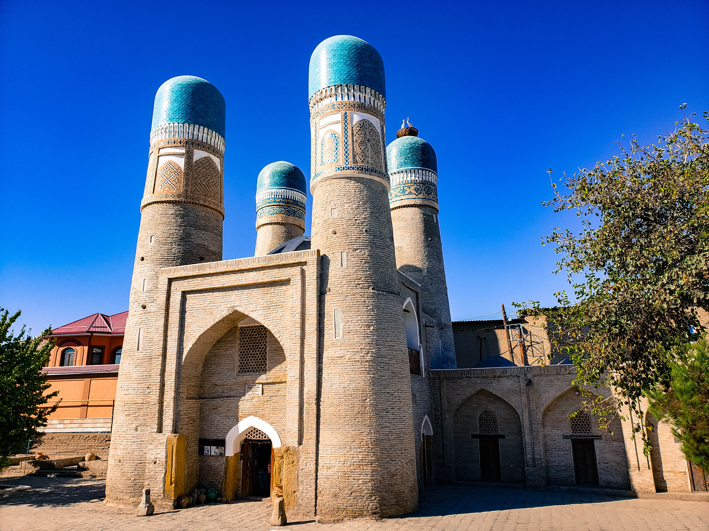
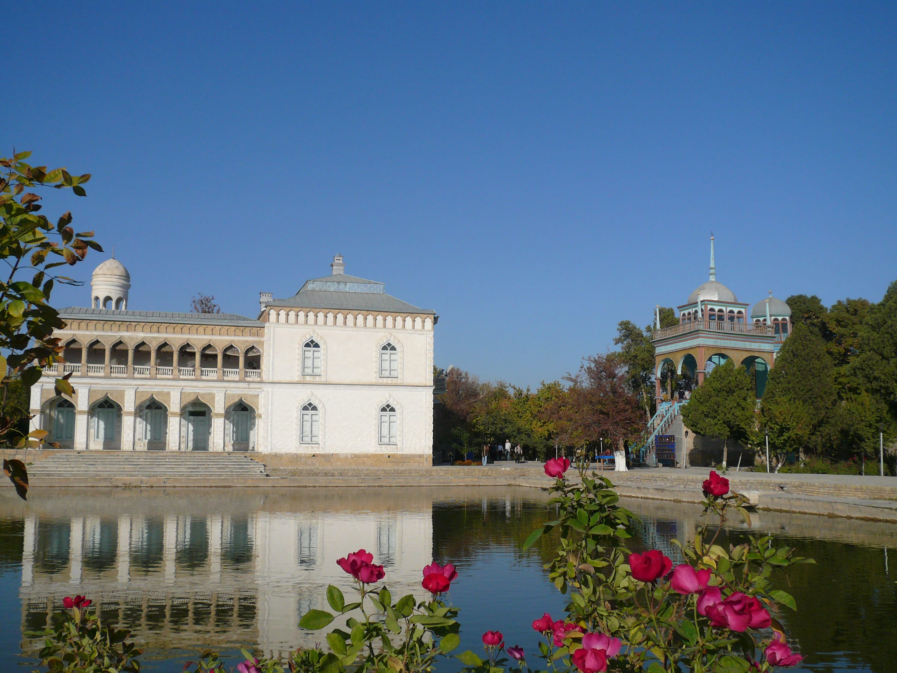

Einst war Buchara ein wichtiges und legendenumwobenes Zentrum an der Seidenstraße. Auf den Basaren und in den Karawanserien trafen sich Menschen aus aller Welt. In den Gassen der Altstadt scheint diese Vergangenheit zum Greifen nah. Berühme Dichter wie Rudaki und Dakhti und auch der Mediziner Avicenna lebten und lehrten in Bukhara. Auch Sheikh Bahaudin Nahshbandisma lebte hier im 15. Jahrhundert. Die meisten der über 140 Baudenkmäler stammen aus der Zeit der ersten Usbeken, die Schaibaniden. Sie prägten das auch heute noch vorhandene Gesicht der Altstadt mit ihrer Medressen, Moscheen und Basaren.

Samaniden Mausoleum
Etwas außerhalb der Altstadt liegt das Mausoleum der Samanidendynastie. Es stammt aus den ersten Jahren des zehnten Jahrhunderts und ist wegen der Klarheit seiner Formen und seiner einzigartigen Dekoration ein Meisterwerk der frühen islamischen Architektur.
Dieses weltberühmte architektonische Meisterwerk wurde Ende des 9. Jahrhunderts erbaut. Das Mausoleum wurde während der Regierungszeit von Ismali Samani als Gruft für dessen kurz zuvor verstorbenen Vater errichtet. Später wurde auch Ismail selbst und sein Enkel Hasr in dem Mausoleum bestattet. Interessanterweise war der Bau von Krypten zu dieser Zeit gegen das Gesetz des Islam, da der Islam verbot, auf Gräbern von gläubigen Moslems nachträglich Monumente zu errichten. Trotzdem wurde das Verbot Mitte des 9. Jahrhunderts von einem Kalif selbst gebrochen, für den ein spezielles Suli-biya-Mausoleum erbaut wurde.

Chashma Ayub
Unweit vom Samaniden-Mausoleum liegt das Mausoleum Chashma Ayub, ein gedrungenes Bauwerk mit hohem Kegeldach und mehreren Kuppeln, das vermutlich aus dem 12. Jahrhundert stammt. Der rechteckihe Bau besteht aus vier Räumen, da sich von Westen nach Osten aneinanderreihen und aus verschiedenen Epochen datieren. Der mit einem Kegeldach überdeckte Raum, in dem heute noch ein Quelbrunnen zu sehen ist, wird als ältester Bauteil angesehen. Seine Entstehung soll der Legende nach mit dem Prophet Hiob zusammenhängen: Als die Stadt Buchara noch nicht existierte und die Umgebung schwach besiedelt war, soll Hiob dort erschienen sein, um Gottes Wort zu predigen. Es herrschte furchtbare Dürre, und die von Durst geplagten Einwohner baten Hiob um Wasser. Er erhörte ihre Bitte, schlug mit dem Stab auf den Boden und das Wasser sprudelte heraus.

Ark-Zitadelle
Der Ark ist eine Zitadelle in der usbekischen Stadt Buchara. Sie diente als Residenz und Regierungssitz der Khane und Emire von Buchara.
Neueste Ausgrabungen belegen, dass die Festung sich seit dem 4. Jahrhundert vor Christus an diesem Ort befindet. Durch mehrmaliges Zerstören und Wiederaufbauen ist über die Jahrhunderte ein 20 Meter hoher, künstlicher Hügel entstanden, dessen oberste Schichten in der Zeit des letzten Emirs von Buchara überbaut wurden. Die hölzernen Bauten des Ark fielen einem Brand im Jahre 1920 zum Opfer, jedoch wurden diese nach historischen Plänen wieder aufgebaut. Der Ark schloss einst eine gesamte Stadtanlage ein, bestehend aus eng aneinander gebauten Häusern, die nicht nur staatliche Institutionen beherbergten, sondern auch sämtliche Wohnungen des Emirs, seiner Frauen und Verwandten und die der hohen Staatsdiener. Die Anlage innerhalb des trapezförmigen Festungsgrundrisses war rechtwinklig konzipiert und beinhaltete die Gemächer des Emirs, den Krönungssaal, die Polizeiwache, Ställe und Lagerräume für Kleider, Teppiche, Schätze, Waffen, und sämtliche weiteren Utensilien. Auch das Gefängnis, verschiedene Werkstätten, die Münze, Moscheen und andere Gebäude gehörten zum Ark.

Djami Moschee
Djami Moschee, Buchara Direkt gegenuber dem Eingang zur Ark-Festung ist der Ayvan der Palastmoschee Djami zu sehen. Sie wurde im 18. Jahrhundert gebaut und besitzt einen viersauligen Wintergarten, der auf drei Seiten von Ayvanen begrenzt wird. Das Innendekor ist typisch fur das ausgehende 19. Jahrhundert / Anfang des 20. Jahrhunderts. Die letzten Instandsetzungsarbeiten fanden in den 20er Jahren unter Mitwirkung des beruhmten usbekischen Kunstlers Usto-Shirin statt.

Kalon Moschee
Die Kalon Moschee mit ihrem Minarett ist eins der herausragenden Monumente Bucharas und stammt aus dem 15. Jahrhundert. Ausgrabungen belegen, dass die ursprüngliche karakanidische Djuma Moschee durch Feuer zerstört und danach abgetragen wurde, wahrscheinlich im Zuge der mongolischen Invasion. Kurze Zeit später wurde sie wieder aufgebaut. Doch auch diese rekonstruierte Moschee hielt nicht lang. Unter den Schaibaniden im 15. Jahrhundert wurde wieder eine Moschee gebaut.

Miri-Arab Medrese
Die Medrese entstand in den Jahren 1530 bis 1536 und ist immer noch eine islamische Hochschule. Aus diesem Grunde ist es dem Besucher nicht gestattet, den Innenhof zu betreten. Die Medrese steht leicht erhöht auf einer Backsteinplattform, da der Vorplatz nach Osten leicht abfällt und ansonsten die Harmonie zur gegenüber liegenden Kalon-Moschee gestört wäre. Besonders ins Auge fällt das hohe Portal und die türkisblauen Kuppeln links und rechts der Eingangshalle. Der nördliche Kuppelturm dient als Beisetzungsstätte für den jemenitischen Scheich Abdullah, der den Beinamen Miri Arab trug und im 16. Jahrhundert großen Einfluss in Buchara hatte.

Magoki-Attori Moschee
Eines der interessantesten Bauwerke Bucharas liegt in nördlicher Richtung hinter dem Geldwechskergewöbe: die kleine Moschee Mago´ki Attori. Sie gab den Historikern und Archäologen Rätsel auf. Ihr Name verweist jedoch auf ihre Entstehungszeit. Mago´ki bedeutet Grube, Vertiefung, denn die Moschee stand tiefer als die heutige Ebene der Straße und des Platzes. Attori erinnert an den Handel mit Gewürzen und Heilkräutern, der in der Nachbarschaft betrieben wurde. In der Zeit der Sogden, in der Mitte des ersten Jahrtausends vor Christus, befanden sich hier ein Markt und ein heidnischer Tempel. Nach der Eroberung durch die Araber wurde hier eine Moschee errichtet, die dann mehrfach umgebaut wurde. Bei Grabungen fand man Überreste aus dem 10. Jahrhundert. Die ebenfalls aus dem 10. Jahrhundert stammende Hauptfassade ist unverändert geblieben und bietet die Möglichkeit, die Bautechnik der Karachaniden zu bewundern. Im 16. Jahrhundert war Mag´oki Attori eine gewöhnliche Gemeindemoschee, sie versank stellenweise bis zu sechs Metern im Erdreich. Unter den Schaibaniden bekam Sie im 16.Jahhundert eine neue Überdachung, an der Ostseite wurde zu Beginn des 20. Jahrhunderts ein neues Postel errichtet.

Medrese Abdullasiz-Khan
Abdulasiz Chan wollte alle seine Vorgänger in dekorativer Ausstattung und architektorischem Wert übertrumpfen. Medresse wurde im Jahre 1652 erbaut. Der Grundriß erinnert an die gegenüberliegende Medrese: Ein Hof mit Ayvonen, Eingangsportal und offene Nischen in den Hof und in der Fassade. Auf dem Mosaik der Hauptfassade und in der Ausmalung der Innerräume sind Märchenvögel, Vasen und Blumensträßen, Parklandschaften-ungewöhnlich, da im Islam eigentlich nicht figürlich gemalt wurde- die an die indischen Miniaturen der Mogulzeit erinnern, zu bewundern.

Chor Minor Moschee
Die Moschee Chor Minor, die 1807 von einem reichen Turkmenen namens Kalif Nijazkul errichtet wurde, liegt am Rande der Innenstadt. Ihre Bauweise weicht vom traditionellen Baustil ab, sie orientiert sich an indischer Taj Mahal. Ursprünglich befand sich hier ein ganzer Komplex mit einem Innenhof, einem Wasserbecken, einer Sommermoschee und dem bis heute erhaltenen viertürmigen Bauwerk. Wegen ihrer vier Minaretten setzte sich der Name Chor (vier) Minor (Minarett) durch. Das für diese Region ungewöhnliche Bauwerk wurde zu einem Wahrzeichen Bucharas.

Labi-Hauz Komplex
Das architektonische Ensemble des Labi-Hauz besteht aus drei großen Monumentalbauten: Der Kukeldash Medrese im Norden, der Medrese Nadir Devon Begi im Westen und der Chanaka Devon Begi im Osten. Im Süden war der Platz von einer Handelsstraße begrenzt. In der Mitte des Platzes befindet sich ein Wasserreservoir. So bedeutet der Name „Laybi-khauz“ „beim Reservoir“

Sitorai Mohi Xosa-Palast
Ungefähr 4 km nördlich des Stadtzentrums von Bukhara liegt der Sitorai Mohi Xosa Palast. Es diente dem letzten Emir von Buxoro als Sommerresidenz. Es ist bereits der dritte Palast an dieser Stelle. Er wurde von 1912 – 1918 von Alim Khan erbaut. Das Hauptgebäude ist U-Förmig angelegt. Im Mittelteil ist der Empfangssaal mit Wandmalereien von Chasandschan und der Weiße Saal, der auch Spiegelsaal genannt wird. Die Stuckarbeiten und Alabasterschnitzereien wurden von Schirin Muradow direkt auf den Spiegeln und nicht auf Mauerwerk aufgebracht. Bei den Arbeiten an einem der Paläste wurden seine Hände durch Erfrierungen für immer verstümmelt.